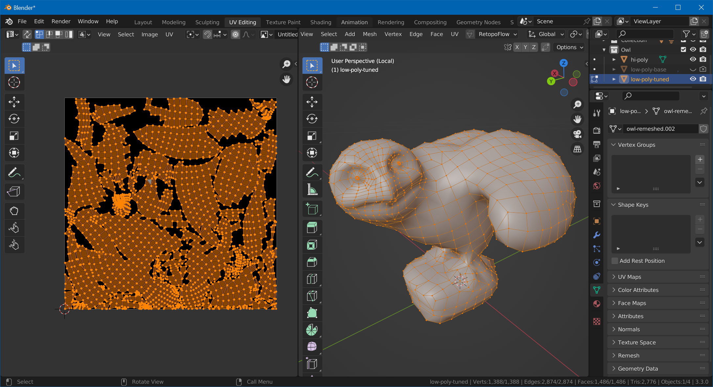
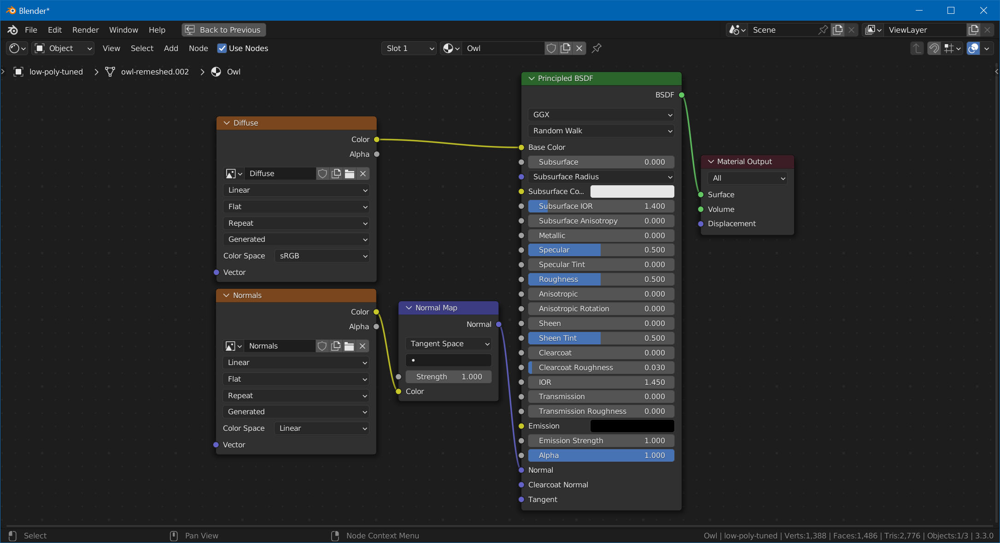
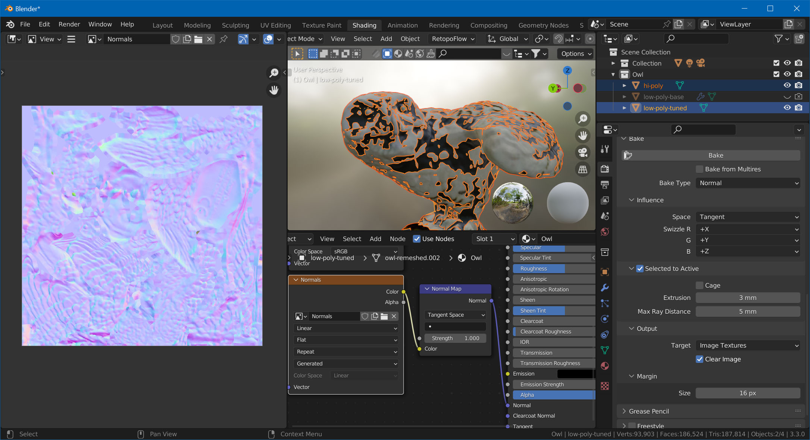
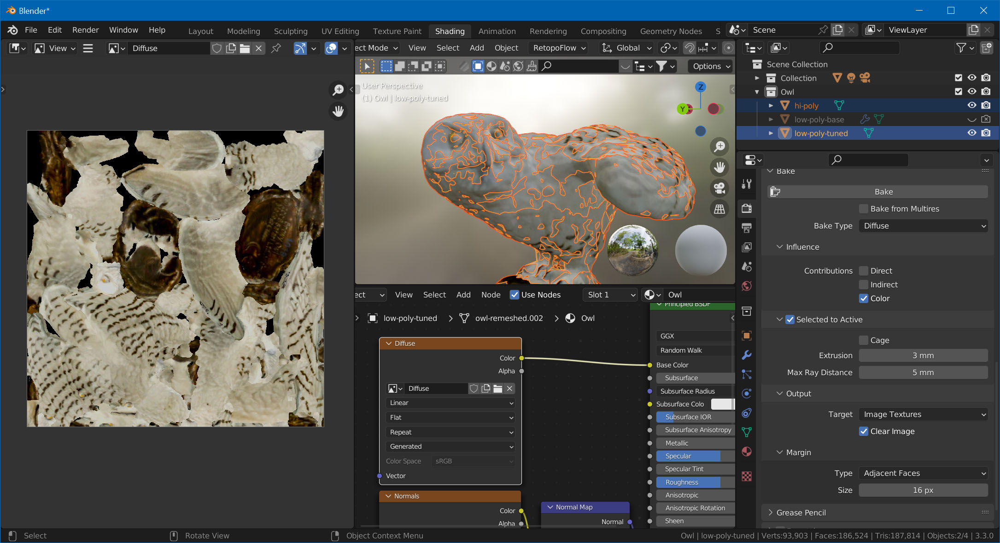
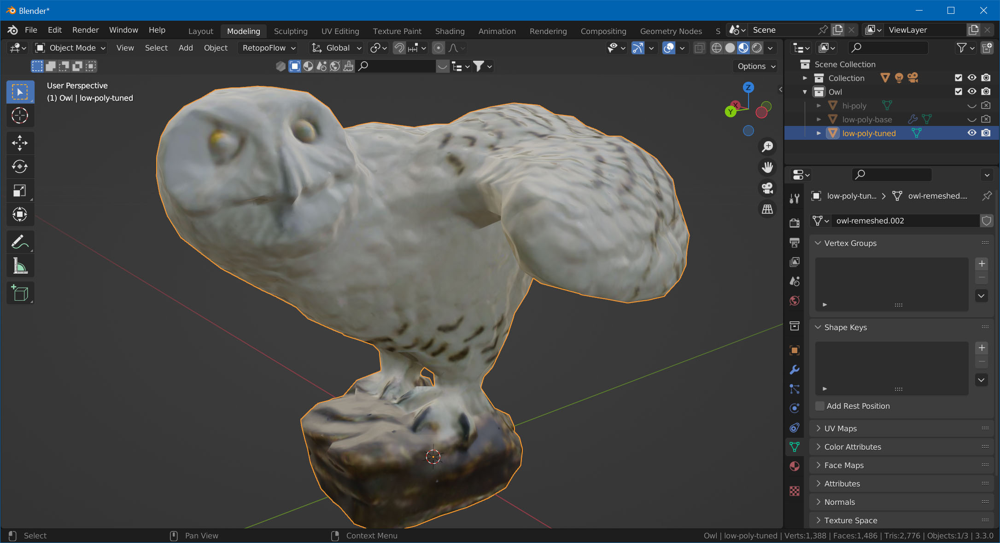

Texture Baking
In this last part, we'll use the original mesh to bake the details of the geometry into a normal map. We'll also project the original texture (diffuse map) onto our new model.
UV-Unwrap
But first, we need to UV-unwrap our low-poly mesh. Change to the UV Editing workspace in Blender, select the low-poly model, TAB into Edit Mode, hit A to select all, and choose UV -> Smart UV Project.

Set Up Material
Before we bake anything, we'll set up the material. Go to the Shading workspace and assign a new material to the low-poly mesh. Then, set up the two maps we're going to bake. In the node editor:
- Hit
Shift+A, choose Texture -> Image Texture. - With the image texture selected, hit Shift+D to duplicate
- On the first texture, click New, name it "Diffuse", and set the size to the same size as the texture of your original 3D scan.
- On the second texture, also click New, name it "Normals", same size, but enable 32-bit Float.
- Hit
Shift+Aagain, and add a Normal Map node. - Connect the "Diffuse" texture's Color to the principled BSDF node's Base Color input.
- Connect the "Normal" texture's Color to the normal map's Color input.
- Connect the normal map's Normal output to the BSDF node's Normal input.
Your graph should now look like this:

Bake Normal Map
In the Outliner, make sure both the high-poly and the low-poly mesh are visible. Also, make sure that the low-poly object doesn't have any modifiers added (RetopoFlow might have added a Mirror and Displace modifier). Select in this order, while holding Ctrl:
- The high-poly mesh
- The low-poly mesh
Go to Render Properties and make sure Cycles is selected as the render engine. Then, scroll down to the Bake section.
- Set Bake Type to Normal
- Check Selected to Active
- In the node editor, select the "Normals" node.
- Hit Bake.
Depending on the size of your mesh, you'll also need to set Extrusion and Max Ray Distance. Values on 3mm and 5mm respectively worked for this example.

Bake Diffuse Map
Now, select the "Diffuse" node in the node editor. Change Bake Type to Diffuse, uncheck Direct and Indirect, and hit Bake again.

That's it! Hide the high-poly mesh, and you've got your game-ready model!
